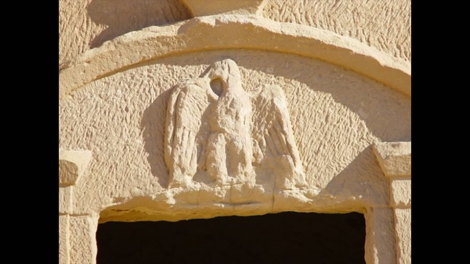

Curious Being
Petra: More Ancient than Assumed?
Tina · 20 min · watch on YouTube · summarised 2026-08-23
Petra's rock-cut caves are credited to the Nabataeans, nomadic Arabs who made it their capital over 2,200 years ago 00:00–00:32. The oddity she starts from: of all the Nabataean cities, only one other looks anything like it — Hegra in Saudi Arabia — and even Hegra differs significantly. So did the Nabataeans create Petra, or find it?
The scale
The numbers, with people in the photographs as her preferred sense of scale 01:33–05:07:
- Including Little Petra and nearby sites, 263 km² / about 65,000 acres.
- Over 800 cave structures carved into cliffs.
- The Monastery: 48 m wide by 47 m high — a 15-storey building, carved at altitude, reached by a long hike.
- The Treasury: over 37 m high, with an interior of about 2,000 m³, more than an Olympic pool.
- The Urn Tomb: 20 m long, over 17 m wide, about 10 m high — over 3,400 m³, nearly two Olympic pools, and cut into a high cliff.
Her point about the interiors: the famous facades are Hellenistic and elaborate, but inside the big caves are plain — a chamber or two with high ceilings, sharp 90° corners and oversized rectangular doors. Which means the labour went into removing stone, not decorating. "It's very possible that the masons spent more time excavating the austere interior than working on the elaborate exterior."
She asks where the excavated rock went, in a hilly site where moving it would be hard, and notes that Petra's sandstone is hard but brittle and unsuitable for long spanning beams — so cutting chambers this size without collapse implies real knowledge of engineering and geology.

The scale that the labour argument rests on - doors and chambers proportioned to each other, and both enormous.
The Urn Tomb also carries what she describes as highly uniform parallel markings covering walls and ceilings, which she argues hand tools cannot produce.
Her own caveat, offered early: not all the caves are equal, some small ones are much cruder, and she thinks Petra may have been carved by different groups over different periods for different purposes.
The other Nabataean cities
The first strand of the argument 07:08–09:12. After Petra, the Nabataeans expanded into what is now Syria, Israel and Saudi Arabia. Their other notable cities — Avdat, Mampsis, Bosra — look nothing like it. Avdat, the most important city on the Incense Route after Petra between the 1st century BC and the 7th century AD, has no shortage of rock cliffs and was nonetheless built of stone blocks, like a Roman town.
Her framing: carving rock caves and building with blocks are different crafts requiring different skills. Archaeological cultures are usually recognisable by their architectural signature — Greek, Roman, Egyptian, Indian, Chinese. The Nabataeans did not apply theirs to most of their own cities.
Hegra, and why it is the real test
The second and stronger strand 09:44–16:19. Hegra, or Mada'in Saleh, lies about 300 miles south of Petra in Saudi Arabia, in comparable terrain, and was the kingdom's second capital and a major trade hub. It has over 100 carved caves in the Petra style and has been left largely undisturbed for nearly 2,000 years.
Three differences:
1. Scale. Most Hegra caves are much smaller, cut into boulder-like outcrops rather than mountains. The largest, the lone palace, measures about 22 by 14 m — the Monastery is more than twice its height and size. Where a Hegra facade is grand, the interior behind it is usually small and full of niches. Petra's large caves have giant doors proportioned to giant chambers; Hegra's have human-sized entrances.
2. Inscriptions, and dates. Many Hegra caves carry Nabataean inscriptions on rock plaques above the doors — the oldest 1 BC, the most recent 70 AD. They record when the tomb was cut, who and whose family it was for, sometimes the masons' names, and curses against robbers. They date the Hegra caves firmly to the 1st century AD. Petra has no such inscriptions, and no other dating evidence, yet the Treasury and its peers are assigned to roughly the same period.
3. Tool marks and finish. Close-up photographs of the Hegra facades show countless small chisel marks — surfaces that look smooth from a distance were achieved by masons chipping away stone, the method traditional masons still use. Petra's surviving facades, at the Monastery, the Urn Tomb and the Treasury, appear smooth and almost polished, with curved columns, accurate detail and sharp adjoining lines. She points to a doorway at the Urn Tomb where the finely marked interior sits beside a smoother frame.
Her honesty about her evidence is worth recording: "I haven't been to either Petra or Hegra so my judgment is based on detail photos that I managed to find online."


The comparison the whole argument turns on: what Nabataean rock-cutting looks like at the site where the attribution is certain, against Petra.
The argument
Which produces the shape of the case 15:13–16:19. The Hegra caves are the tombs of Nabataean elites, inscribed by them, dated by their own texts. They should represent the best work the Nabataeans could do. And they are smaller and less sophisticated than the ones at Petra, the earlier capital.
"How did the Nabataeans achieve a much higher level of stone carving and finishing work in Petra while they couldn't do so for the Nabataean elites' resting places in Hegra?"
Function
The third difference, and one that cuts against the standard reading of Petra 16:19–17:47. Hegra's caves are tombs, and the Nabataeans there lived in a separate town of small blocks and mudbrick; the rock-cut cluster is a necropolis.
Archaeologists read most of Petra's caves as tombs too — big ones for royalty, small ones for commoners. She disagrees, and her reason is the water system: Petra has an extensive rock-cut network of dams, tunnels, cisterns and conduits built to control and collect annual flash floods. That, she argues, is a system for the living. Water made Petra an oasis; people lived, worked and traded in its caves. Some local Bedouin still live in them.
Where she lands
Her proposal 19:08–20:05: an unknown earlier culture created Petra with its monuments and its water system and lived there for a long time before disappearing; the Nabataeans arrived in the 4th century BC, found it, made it their capital, and later — moving to Hegra — had their tombs cut in the style they had inherited and admired.
What you can check yourself
- The Hegra inscriptions are the strongest checkable thing in the video. They are published, translated and dated, they name the tomb owners and sometimes the masons, and they place the Hegra caves in the 1st century AD without anyone's interpretation.
- The size comparison is measurable. 22 × 14 m against 48 × 47 m are figures, and both sites are surveyed.
- The chisel marks at Hegra are visible in any close photograph and are the ordinary product of ordinary masonry.
- Avdat, Mampsis and Bosra can be looked at, and whether they are block-built rather than rock-cut is not a matter of opinion.
- Petra's water system — dams, tunnels, cisterns and conduits — is mapped and published.
- Whether Petra's monuments carry dating inscriptions is a question with a findable answer.
- The interior volumes follow from published dimensions.
What the video does not settle
- Erosion removes tool marks, and Petra is far more eroded. She says herself that most Petra facades are badly damaged. Weathered sandstone loses fine chisel work first; a surface that reads as "smooth, almost polished" in a photograph may be a surface whose marks have gone. The comparison she draws with Hegra — which she notes has been undisturbed and well preserved — is between a weathered site and a protected one, and the video does not address what that does to the evidence.
- The judgement is made from photographs found online and she says so. That is honest, and it is also a real limit: surface finish is the claim, and surface finish is exactly what does not survive reproduction, lighting and resolution. Her own side-by-side shows the problem — the Petra half is a shaded surface in soft even light, the Hegra half is in hard raking sun, which is the lighting that makes tool marks most visible.
- A capital and a provincial necropolis are not like for like. Petra was the kingdom's centre for centuries with the revenues of the incense trade behind it; Hegra was a secondary city, and its rock-cut caves are family tombs rather than civic monuments. Difference in ambition and budget is the ordinary explanation for difference in scale, and it is not considered.
- The "other cities look different" argument has a mundane answer. Rock-cut architecture requires suitable cliffs of workable stone in the right place. Avdat having rock in the vicinity is not the same as Avdat having Petra's geology, and the video does not compare the stone.
- The absence of inscriptions at Petra is asserted, not established. Petra is not an epigraphic blank, and the claim as stated — that its caves carry no such inscriptions — is the kind of negative that needs a source.
- The water system argument proves less than it is asked to. That Petra was a living city with hydraulic engineering is not in dispute; it does not follow that the rock-cut tombs within it are not tombs, and both can be true of the same site.
- The two halves of the case pull apart. She proposes early on that Petra was carved by different groups over different periods, which is a modest and plausible reading that would explain the unevenness she notes. She ends instead with a lost civilisation, and the two are never reconciled.
See also
- Petra's Treasury Bombshell — the sequel, three years later, which takes this comparison as given and works instead from excavation reports and sediment.
- Petra tool marks — the marks she references here, examined directly.
- The Osireion Mystery — the same argument shape at a site in Egypt: the structure is more advanced than the people it is credited to.
What we have not checked
- Neither site has been visited by the presenter, who states that her comparison rests on detail photographs found online. Nothing here has been checked against the sites either.
- The Hegra inscriptions are as she reports them — dates of 1 BC to 70 AD, tomb owners, masons' names, curses — and no publication or translation has been consulted.
- Figures are as stated and have not been traced: 263 km² / 65,000 acres, 800+ cave structures, Monastery 48 × 47 m, Treasury 37 m and 2,000 m³, Urn Tomb 20 × 17 × 10 m and 3,400 m³, Hegra's lone palace at 22 × 14 m, over 100 Hegra caves, 300 miles between the sites, habitation from 7000 BC.
- The claim that Petra's caves carry no dating inscriptions is a negative about a large site and has not been verified.
- The characterisation of Petra sandstone as hard but brittle and unsuitable for spanning beams is unsourced.
- Whether Avdat, Mampsis and Bosra are as devoid of rock-cut architecture as stated has not been checked, nor has the comparability of their geology to Petra's.
- The uniform parallel markings in the Urn Tomb are described as impossible for hand tools; no measurement of spacing, depth or profile is offered, here or in the entry on Petra tool marks.